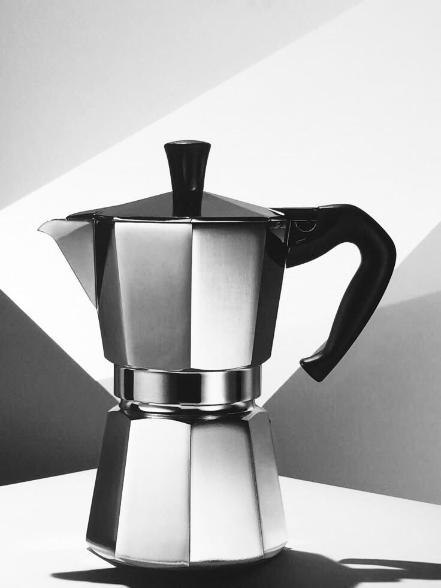

Descripción
El auténtico sabor del espresso italiano. Fabricada con el icónico diseño octogonal de aluminio, esta cafetera combina tradición y durabilidad. Perfecta para quienes disfrutan de un café intenso y un ritual de preparación clásico.
Dato freak: Renato Bialetti, el hombre que popularizó este invento por todo el mundo, fue enterrado dentro de una cafetera moka gigante.
Materialidad
- Aluminio:
- 1. Materialidad clásica y original
- 2. Transmite calor de forma rápida y uniforme
- Acero inoxidable:
- 1. Mucho más resistente a la corrosión, desgaste y golpes
- 2. Compatible con todo tipo de cocinas
Contexto
Hoy en día, la cafetera italiana o Moka Express es un icono del diseño industrial y un elemento imprescindible en las cocinas de millones de amantes del buen café. Sin embargo, muy pocos conocen el insólito secreto detrás de su invención: su creador, Alfonso Bialetti, no se inspiró en una sofisticada máquina de cafetería, sino en cómo su esposa lavaba la ropa.